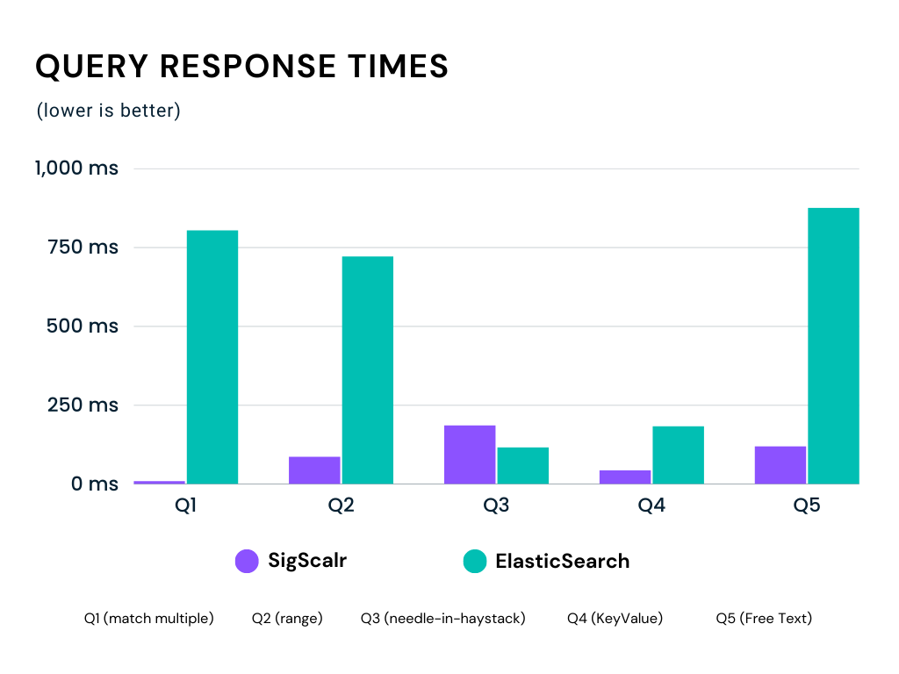
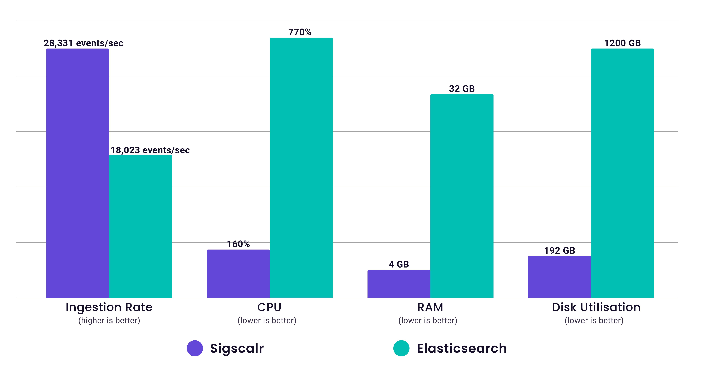

SigScalr vs Elasticsearch:
Scaling Observability

Elasticsearch has historically been a popular choice for log management due to its strengths in scalability, free text searches, and customizability. However, the recent explosion in observability requirements makes Elasticsearch difficult to operate, maintain and scale. On the other hand, SigScalr is an unified observability system that is purpose built to process large volumes of observability data with minimal resources . While Elasticsearch aims to be a general purpose search engine for free text and analytical queries, SigScalr has a focused architecture to process large volumes of high cardinality data, effectively tackling some of observability's hardest problems. In this blog, we compare the performance of SigScalr and Elasticsearch at terabytes scale of observability data as well as the key differences between these two solutions.
Benchmark Result
SigScalr is 4x-8x faster than Elasticsearch for ⅘ query types and has 1.5x faster ingestion than Elasticsearch while consuming 85% less hardware resources.
Benchmark Setup
Data:
Event count: 1 Billion
Event Size: 1000 bytes
| Number of Columns | 34 |
| Num of columns with 1 Billion cardinality | 1 |
| Num of columns with > 100 Million cardinality | 6 |
| Num of columns with free text | 4 |
{
"_index": "ind-2",
"address": "7253 Prairie shire, Chandler, Arizona 69577",
"app_name": "Browncompany",
"app_version": "1.3.9",
"batch": "batch-683",
"city": "Chandler",
"country": "Honduras",
"first_name": "Jameson",
"gender": "female",
"group": "group1",
"hobby": "Reading",
"http_method": "PUT",
"http_status": 200,
"ident": "65218bcc-8632-46f6-8864-40c29aa0c3d4",
"image": "https://picsum.photos/210/234",
"job_company": "Booz Allen Hamilton",
"job_description": "Regional",
"job_level": "Markets",
"job_title": "Architect",
"last_name": "Schowalter",
"latency": 6798739,
"latitude": 7.501476,
"longitude": 62.881365,
"question": "Swag beard polaroid polaroid poutine chicharrones tumblr paleo?",
"ssn": "563566085",
"state": "Arizona",
"street": "7253 Prairie shire",
"timestamp": 1683640434592,
"url": "https://www.investorbleeding-edge.com/sexy/real-time/value-added/global",
"user_agent": "Mozilla/5.0 (Windows NT 5.1) AppleWebKit/5311 (KHTML, like Gecko) Chrome/39.0.868.0 Mobile Safari/5311",
"user_color": "PaleGoldenRod",
"user_email": "dasiadonnelly@kassulke.info",
"user_phone": "9124648960",
"weekday": "Monday",
"zip": "69577"
}Hardware Used:
Instance: i4i.2x large
vCPU: 8
RAM: 64 GB
Storage: 1.8 TB Nitro SSD
Node Setup Steps:
sudo mkfs -t xfs /dev/nvme1n1
sudo mkdir /data1
sudo mount /dev/nvme1n1 /data1
sudo chown ec2-user:ec2-user /data1/ElasticSearch Setup Steps:
sudo mkfs -t xfs /dev/nvme1n1
cd /data1/es
wget
https://artifacts.elastic.co/downloads/elasticsearch/elasticsearch-oss-7.9.3-linux-x86_64.tar.gz
tar -xvf elasticsearch-oss-7.9.3-linux-x86_64.tar.gzAdd following to config/elasticsearch.yml
network.host: 0.0.0.0
discovery.type: single-nodeIncrease the jvm RAM of elasticsearch process by adding following to config/jvm.options:
-Xms30g
-Xmx30gElasticsearch uses mmapfs for storing indices. As the default os limits were too low, we increased them by running:
sudo sysctl -w vm.max_map_count=262144Start Elasticsearch:
nohup ./bin/elasticsearch > esstart.log 2>&1 &Add template:
curl --location --request PUT 'http://<ES_IP>:9200/_template/temp1' \ --header
'Content-Type: application/json' \ --data-raw '{ "index_patterns": "ind*", "settings":
{ "number_of_shards": 6, "number_of_replicas": 0 }, "mappings": { "_source":
{ "enabled": true }, "properties": { "timestamp": { "type": "date", "format":
"epoch_millis" } } } }'SigScalr Setup Steps:
mkdir /data1/sigscalr
cd /data/sigscalr
sudo nohup ./sigscalr > hyperion.out 2>&1 &Client Setup Steps:
mkdir /data1/client
cd /data/client
git clone git@github.com:sigscalr/sigscalr-client.gitRun load against Elasticsearch:
nohup go run main.go ingest esbulk -b 1000 -t 1_000_000_000 -d
http://<ES_IP>:9200 -p 10 > estest.log 2>&1 &go run main.go query -d http://<ES_IP>:9200 -v -n 1Run load against SigScalr:
nohup go run main.go ingest esbulk -b 1000 -t 1_000_000_000 -d
http://<SigScalr_IP>:8081/elastic -p 10 > sstest.log 2>&1 &go run main.go query -d http://<SigScalr_IP>:80/elastic -v -n 1Query Results:
| Query Type | SigScalr (ms) | ElasticSearch (ms) | Comparison |
|---|---|---|---|
| Q1 (match multiple) | 104 | 803 | 7x |
| Q2 (range) | 87 | 720 | 8x |
| Q3 (needle-in-haystack) | 185 | 116 | 0.6x |
| Q4 (KeyValue) | 44 | 182 | 4x |
| Q5 (Free Text) | 120 | 875 | 7x |
Ingestion Results:

| Metric Name | SigScalr | ElasticSearch | Comparison |
|---|---|---|---|
| Ingestion Rate | 28,331 events/sec | 18,023 events/sec | 1.5x Faster |
| CPU | 160% | 770% | 80% less CPU |
| RAM | 4GB | 32 GB | 90% less RAM |
| Disk Utilization | 192 GB | 1200 GB | 84% less disk space |
Observability Systems Comparison:
Observability data is uniquely identified by fast, unstructured, multifaceted datasets that require ultra low latency for free text, analytical, and time-series queries. With high volumes of irregular data, traditional systems deal with this through an index everything, index something, or index nothing approach. When applied to observability data, these solutions have various degrees of success and failures.
| Architecture Approach | Pros | Cons |
|---|---|---|
| Index Nothing |
Fast ingestion Minimal storage requirements |
Slower queries requires full table scans |
| Index Something | Faster queries for indexed fields |
Slow query performance for unindexed fields Determining which fields to index is not easy |
| Index Everything | Fast queries |
Slower ingestion Larger storage usage Indices suffer on high cardinality data |
SigScalr turns this on its head with a dynamic approach to indexing. Using an append-only columnar storage, SigScalr determines the optimal encoding format for a given column based on the data type and cardinality in real time.
These encoding formats are custom built and highly optimized for in memory processing, vectorized execution, and storage space.
SigScalr also dynamically generates mico-indices that take up less than 1% of storage space yet is able to drastically reduce the amount of file reads.
Elastic vs SigScalr:
Storage Systems:
| ElasticSearch | Indexes all incoming fields by default but also is possible to configure which fields to not index. |
|---|---|
| SigScalr | Uses a columar storage format that generates segments and microindices. |
CPU/RAM Resources:
| ElasticSearch | Uses inverted indices to answer queries. If these indices do not fit in memory, with high cardinality datasets, query performance suffers. Creating too many shards creates a lot of memory overhead. Requires proper planning, testing, and iterating to optimize performance. |
|---|---|
| SigScalr | Zero copy ingestion and queries keeps CPU and Memory requirements low at all times. Query engine uses the amount of configured memory to preload the micro indices in memory. |
Query Performance:
| ElasticSearch | If indices can fit in memory, query performance is extremely fast and highly reliable. If not, which will often happen for high cardinality data, then query performance suffers. |
|---|---|
| SigScalr | The small nature of generated micro indices allow significant search space reduction even when resources are low. Vectorized execution and optimized file formats makes all queries for all data types and cardinalities blazing fast. |
Setup and Maintenance:
| ElasticSearch | Highly tunable to get high performance. A lot of knobs to turn makes it hard to always get the “optimal” settings, yet makes it possible to iterate on performance. |
|---|---|
| SigScalr | Needs minimal configuration to dynamically optimize encodings, indices, and memory management. |
As Elasticsearch is a general purpose document search engine, it has other features SigScalr does not. For example, updating & deleting documents, different types of search and scoring functions, etc. SigScalr is purpose-built for the observability data types of logs, metrics, and traces.
Conclusion
Observability data has unique characteristics and generic purpose search engines do not work for today's cloud workload or are too expensive. SigScalr is solving this problem by building a database from the ground up specifically for the observability data. As demonstrated in this benchmark blog, SigScalr performs magnitudes better than Elasticsearch while consuming 1/10th of resources. Give SigScalr a try or book a demo to find out how you can implement observability at a price that does not break the bank.